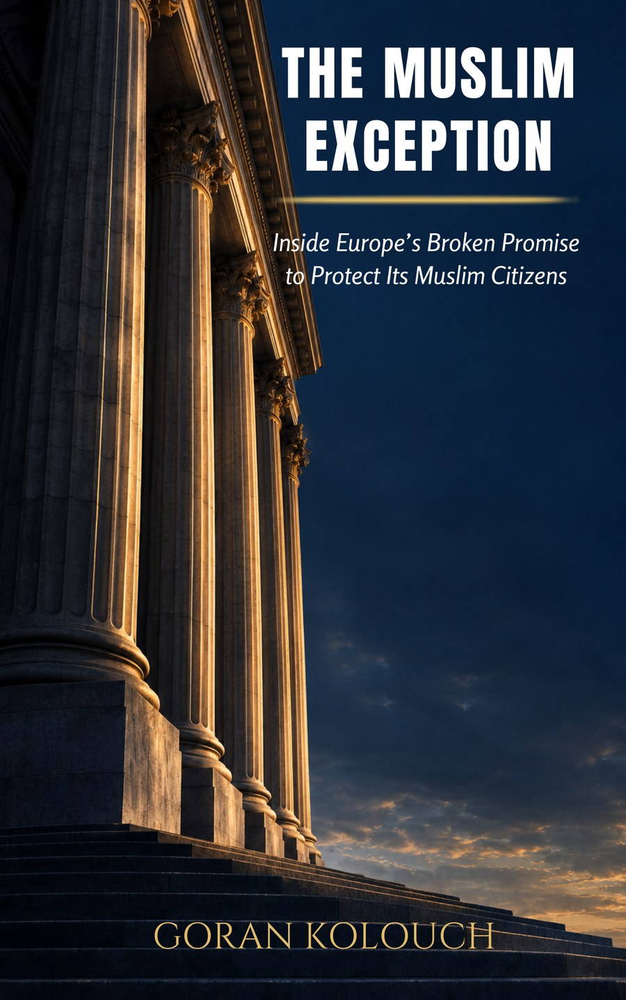

Inside Europe's broken promise to protect its Muslim citizens
A study of the enforcement gap between the human rights laws written to protect Muslim communities in Europe and the reality of how — and whether — those laws are applied.
Every copy sold helps fund the formal registration of EqualFaith Europe as a Dutch NGO — the next step in turning this research into a lasting institution.
Anti-discrimination protections for religious minorities are, on paper, some of the strongest in the world. The Muslim Exception asks a harder question: what happens when those protections meet a regulator that won't act, a court system Muslim complainants can't afford to reach, or a platform that treats discrimination as a policy exception rather than a legal violation.
Drawing on formal complaints, regulatory filings, and casework from across the EU, Kolouch traces how enforcement — not legislation — is where equal treatment for Muslim communities in Europe quietly fails.
"The law was never the problem. Reaching it was."
EqualFaith Europe is currently a stichting in formation. Registration, and the ANBI status that follows it, are what allow the organisation to file complaints, hold funds, and operate with legal standing in the Netherlands and the EU. Proceeds from this book go directly toward that registration.